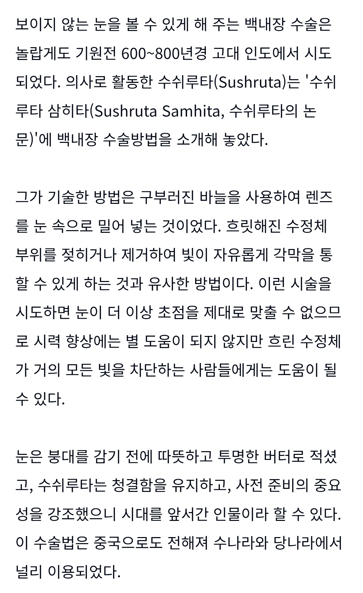

인도는 기원전 600년전, 백내장 수술을 했는데
흐릿해진 수정체를 젖히거나 제거하여
빛이 각막을 통과할 수 있게끔 했다
시력 향상은 어려워도 시야 확보에는 도움이 되었으며
청결을 위해 투명한 버터를 썼다
(+참고로 우리가 쓰는 1 2 3 4 5 6 7 8 9 0의 기원도 고대 인도)

인도는 기원전 600년전, 백내장 수술을 했는데
흐릿해진 수정체를 젖히거나 제거하여
빛이 각막을 통과할 수 있게끔 했다
시력 향상은 어려워도 시야 확보에는 도움이 되었으며
청결을 위해 투명한 버터를 썼다
(+참고로 우리가 쓰는 1 2 3 4 5 6 7 8 9 0의 기원도 고대 인도)
장르소설에 자주 나오는 고대 인도 요로결석 수술법도 저 의사임
기원전 600년경 저술된 인도의 의학서인 수슈루타 삼히타에서 회음부 절제술에 대한 기록이 등장하며, 성기 아래쪽 회음부를 절개하여 방광에 접근하여 결석을 꺼내는 외과 시술 방법이 기록되어 있었다. 저자인 수슈루타는 요로결석의 생성 기전에 대해 '방광 통로가 깨끗하게 유지되지 않거나 건강에 나쁜 음식을 섭취하면 불규칙한 가래와 소변이 섞여 결석이 형성된다. 이는 깨끗한 물을 새 물병에 담아두어도 시간이 지나면 침전물이 생기는 현상과 같다.'고 기술했다.
와 리얼 시대를 많이 앞섰네
와 뭐냐 ㄷㄷ
그 시대 천재네 ㄷㄷ
솔직히 대단한데
닥터프렌즈가 들려주는 의학의 역사 보면 인도 의사 수슈르타가 거의 고대 화타처럼 엄청 자주 나옴.
린도가 아니라 인도였네 저때는
천축국
인도사람들 신기한건 해외 나가는 애들은 진짜 식자층인데 냄세가 왜케남
그나라사람들이 체취가 강하데
먹는거 문제임
고맙데
냄세 x
냄새 O
데오를 안바름
큐민 향이 땀냄새를 엄청 독하게 만듬
한국인도 마늘 냄새 나긴 함, 먹는게 사람 체취를 결정하는 거지
인도인 살던집 렌트했는데 사방이카레냄새였음 ㅋㅋㅋ
기원전 600-800년에 저런 기술이면 대단하네
고대 로마는 군의관이 맹장수술도 했다며
대단해 하여간
복부지방제거 수술 했단 기록도 있음 ㄷㄷ
전문용어로는 낭내 적출술이라고하고
고대로마때도 시행된 방법.
현대에는 수정체가 외상/ 질환으로 인해 이탈된 경우에 한해 시행하는 정도.
고대 인도 문명 보면 재밌는게 많지
특히 영웅들의 대서사시 면에서는
기원전에 적었음에도 문학적 가치가 큰것도 많고
지금도 인구수가 유의미 한데, 저때는 사람많은곳이 진짜 선진기술의 집약체였겠지
저.. 선생님..
마취는 언제 개발 되나요..?...??
환자분~ 따~끔~ 하세요~
응 아편이나 처머거~
진짜 미쳤네